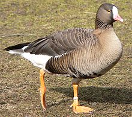

| Lesser White-fronted Goose | |
|---|---|
|  | |
| Conservation status | |
| Binomial name | |
| Anser erythropus (Linnaeus, 1758) |
The Lesser White-fronted Goose (Anser erythropus) is a goose closely related to the larger White-fronted Goose (A. albifrons).
It breeds in northernmost Asia, but it is a scarce breeder in Europe. There is a re-introduction scheme in Fennoscandia.
The Lesser White-fronted Goose winters further south in Europe and is a rare winter vagrant to Great Britain. Individual birds formerly appeared regularly at WWT Slimbridge in Gloucestershire, England, where they inspired Sir Peter Scott to set up The Wildfowl and Wetlands Trust – modern records, however, are far less frequent, a consequence of the species' decline on its European breeding grounds. An attractive species, it is also widely kept in wildfowl collections and, as a result, escapes do occur; individuals seen in summer, or in the company of other feral geese, are likely to be of captive origin.
The two white-fronted goose species differ little other than in size (the Lesser, at 53–66 cm length and with a 120–135 cm wingspan, is not much bigger than a Mallard (Anas platyrhynchos) but both may be readily distinguished from the Greylag Goose by their bright orange legs and their mouse-coloured upper wing-coverts. The Greylag Goose has the bill and legs flesh-coloured, and the upper wing-coverts of a bluish-grey.
Both white-front species have a very conspicuous white face and broad black bars which cross the belly.
Adult Lesser White-fronted Geese, as well as being smaller than White-fronted Geese, have an obvious yellow eye-ring, and the white facial blaze goes up to the crown.
Lesser White-fronted Goose is considered an endangered species, but there are programmes to reintroduce animals into the wild to strengthen the population. Additionally it is one of the species to which the Agreement on the Conservation of African-Eurasian Migratory Waterbirds (AEWA) applies.
{kind=link}